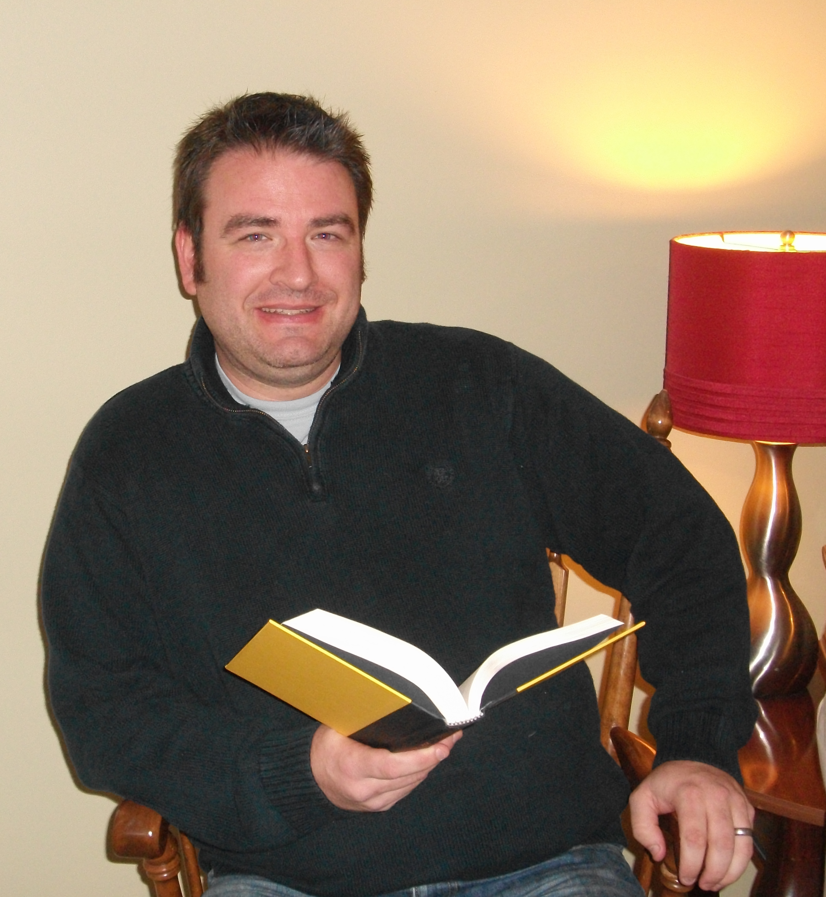

|  |
Gregory M. Thompson
Freelance Writer of Speculative Fiction
Gregory M. Thompson is a science fiction writer/fantasy/horror writer
with publishing credits in Aphelion Webzine, Concisely, Dark
Gothic Resurrected, Midwest Literary Review, The Fring Magazine,
and more. He has various pieces in various anthologies, including
Steamppunk anthology (story was nominated for an award), and
Welcome to Hell, a western-horror anthology edited by Eric
S. Brown. Other novels include Nightcry, The Golden Door, the
Horde Trilogy, Indiscriminate, My Only One, and Not
Enough to Live By (released May 2018). In January 2018, he released
his horror and general poetry chapbook, Althea and Other Poems.
He had 2 comic shorts appearing in 2 horror comic anthologies in 2019.
In April 2016, he ran a successful Kickstarter to fund
his one-shot horror comic, Lilacs. Currently, he's a writer for
Screenrant.com and is writing a comic series for Hooligan Comics. When
he's not bleeding his words on the page, he enjoys football, playing
horror board games, and bicycling. He lives in Illinois with his wife
and two boys. Find out more information at
www.nightcrynovel.com
|